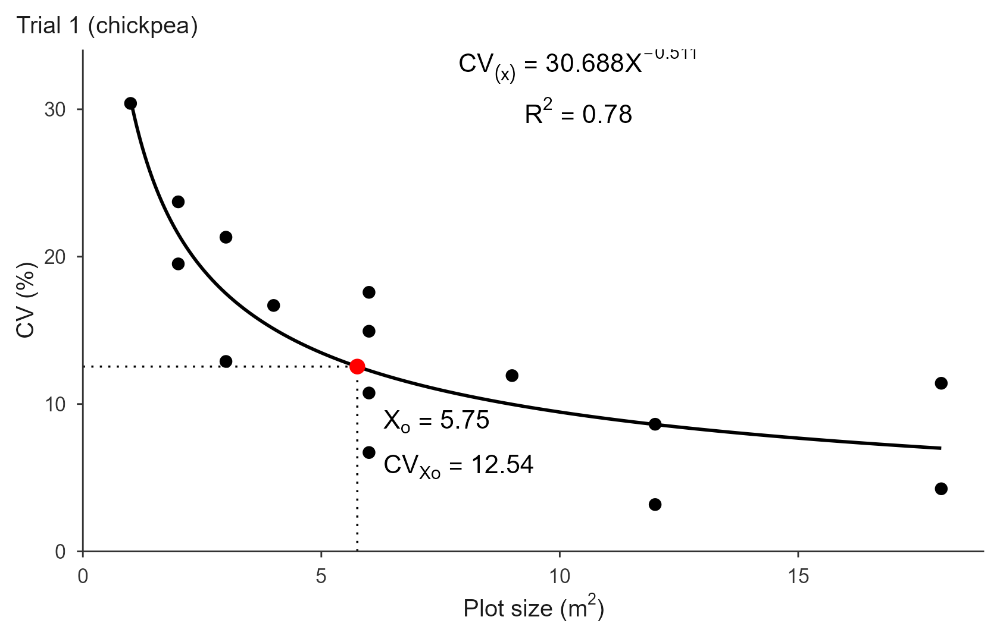
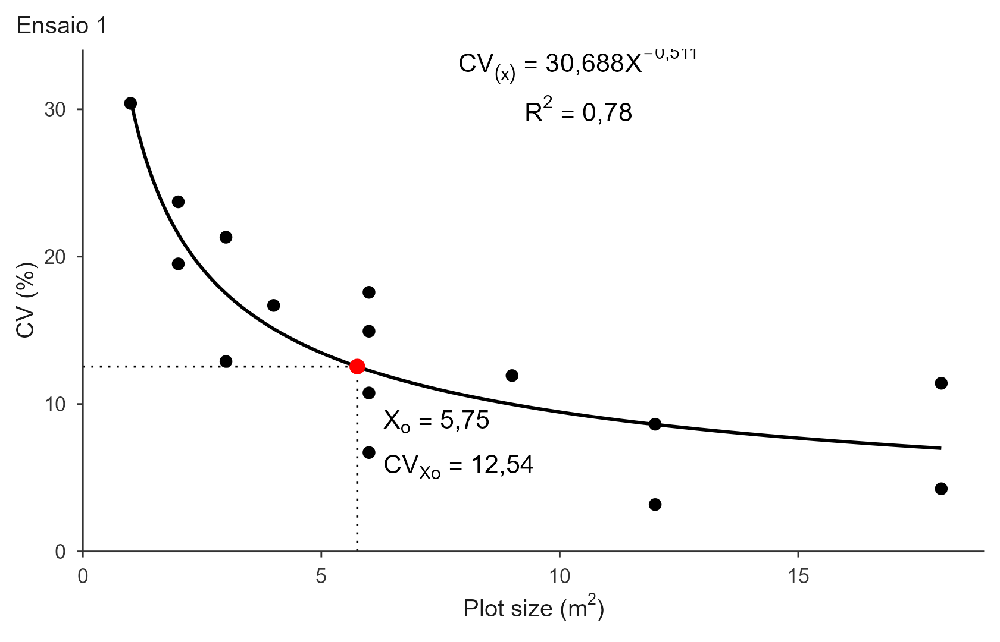

mcm.Rmd
library(trialSize)The two plateau models cut the CV curve into pieces. The Modified Maximum Curvature method takes a different route: it fits a single smooth curve and then asks where that curve bends the most.
The relationship between CV and plot size is described by a power function,
with and , so the CV decreases as plots grow. This curve never becomes exactly flat, which is why the method cannot simply read off a plateau. Instead it uses the curvature of the line at each point,
and takes the optimal plot size as the point of maximum curvature, the “elbow” where the steep initial drop turns into the slow tail. Solving for gives a closed form:
Because it locates an elbow rather than a plateau, the MCM systematically returns a smaller optimum than the LRP and QRP, and correspondingly a higher CV at the optimum. This is expected, not an error.
A note on the word “modified”: in the original paper it refers to
correcting
by the cost factors
and
(labour per plot and per unit area). Modern Brazilian plot-size studies
drop that cost step, and fit_mcm() follows them:
is returned in the units of x.
This is the one place in the package where the two reference articles genuinely disagree, so both are available.
method = "loglinear" is the classic
route. Taking logs linearizes the model,
so a and b come from a straight-line
regression. Meier & Lessman weight that regression by the degrees of
freedom of each point, following Federer (1955): CVs from large plots
are computed from fewer plots and are less reliable, so they should
count less. Pass df to enable that weighting.
method = "nls" (the default) fits
directly on the original scale by nonlinear least squares, seeded from
the log-log fit. This is what the modern articles do, and it is
consistent with fit_lrp() and fit_qrp(). If
nls() fails to converge, the function falls back to the
log-linear estimate with a warning rather than erroring out.
The two give visibly different answers, so choose deliberately: match whichever article you are comparing against.
Original method: Meier, V. D. & Lessman, K. J. (1971). Estimation of optimum field plot shape and size for testing yield in Crambe abyssinica Hochst. Crop Science, 11(5), 648-650. (After Lessman & Atkins, 1963.)
Weighting: Federer, W. T. (1955). Experimental Design. Macmillan, New York.
Validation used here: Cargnelutti Filho, A., Loro, M. V., Ortiz, V. M. & Andretta, J. A. (2025). Determinação do tamanho de parcela para avaliar a massa de parte aérea de grão-de-bico. Revista Vivências, 21(43), 499-513.
The chickpea trials again. n is the number of plots of
each size
(),
which supplies the degrees of freedom for the optional weighting.
X <- c(1, 2, 2, 3, 3, 4, 6, 6, 6, 6, 9, 12, 12, 18, 18)
n <- c(36, 18, 18, 12, 12, 9, 6, 6, 6, 6, 4, 3, 3, 2, 2)
CV1 <- c(30.40, 19.51, 23.72, 12.89, 21.32, 16.69, 6.71, 10.75,
17.58, 14.94, 11.93, 3.18, 8.63, 4.25, 11.41)
CV2 <- c(34.79, 29.44, 26.45, 26.35, 31.74, 25.01, 21.44, 22.86,
28.93, 16.17, 27.29, 19.89, 16.85, 26.53, 14.70)
CV3 <- c(31.12, 20.87, 29.09, 20.02, 28.04, 19.97, 10.74, 19.28,
18.18, 26.46, 17.41, 11.51, 17.96, 9.18, 19.17)Both x and cv must be strictly positive:
the log-log fit and the starting values are undefined otherwise.
fit <- fit_mcm(x = X, cv = CV1)
fit
#> Modified Maximum Curvature (MCM) fit
#> Method: nls
#> Weighted by df: FALSE
#> Breakpoint (Xo): 5.755
#> CV at breakpoint: 12.542
#> R2: 0.775 RMSE: 3.427m² with , reproducing the published MCM values for trial 1 (and, as expected, well below the LRP’s 7.44 m²).
summary(fit)
#> Model coefficients (CV = a * X^(-b)):
#> a b
#> 30.687871 0.511278
#>
#> Goodness of fit:
#> Breakpoint Breakpoint_Response R2 RMSE
#> 5.754886 12.542286 0.775326 3.427240The closed form can be verified straight from the coefficients:
a <- unname(fit$coefficients["a"]); b <- unname(fit$coefficients["b"])
c(formula = ((a^2 * b^2 * (2 * b + 1)) / (b + 2))^(1 / (2 * b + 2)),
reported = unname(fit$parameters["Breakpoint"]))
#> formula reported
#> 5.754886 5.754886Note there is no AIC or BIC here. The MCM is not nested with the
plateau models and, under "loglinear", is not even fitted
on the same scale, so an information criterion would not be comparable.
Compare methods on R2 and RMSE, both reported
on the original scale.
rbind(
nls = fit_mcm(X, CV1, method = "nls")$parameters[c("Breakpoint", "R2")],
loglinear = fit_mcm(X, CV1, method = "loglinear")$parameters[c("Breakpoint", "R2")],
loglin_df = fit_mcm(X, CV1, method = "loglinear",
df = n - 1)$parameters[c("Breakpoint", "R2")]
)
#> Breakpoint R2
#> nls 5.754886 0.7753260
#> loglinear 6.025869 0.7604369
#> loglin_df 5.858971 0.7679485The differences are modest here but real, and they grow when the CVs
of the large plots are noisy, which is exactly the case the weighting is
meant to handle. The df weighting only applies with
method = "loglinear"; df = NULL (the default)
is the unweighted fit.
The figure has no flat segment: the power curve keeps descending, and the dotted guides mark the maximum-curvature point.
plot(fit, title = "Trial 1 (chickpea)")
plot(fit, title = "Ensaio 1", decimal_mark = ",")
There is no cond_word argument, since the annotation has
no conditional clause: a single power equation and
,
plus
and
by the breakpoint.
plot(fit, title = "Trial 1",
save = TRUE, file = "trial1_mcm.tiff", format = "tiff", dpi = 300)
trials <- rbind(
data.frame(x = X, cv = CV1, trial = "Trial 1"),
data.frame(x = X, cv = CV2, trial = "Trial 2"),
data.frame(x = X, cv = CV3, trial = "Trial 3")
)
res <- fit_mcm(trials, x = "x", cv = "cv", trial = "trial")
#> Using x = 'x', cv = 'cv', trial = 'trial' -> 3 trials.
res
#> MCM fits for 3 trials
#>
#> trial a b breakpoint plateau R2 RMSE method weighted
#> Trial 1 30.6879 0.5113 5.7549 12.5423 0.7753 3.4272 nls FALSE
#> Trial 2 33.6190 0.1956 3.9928 25.6432 0.4968 4.0081 nls FALSE
#> Trial 3 31.0513 0.2812 4.6815 20.1174 0.5570 4.2224 nls FALSEThe three breakpoints (5.76, 3.99, 4.68) average 4.81 m², the article’s MCM figure.
The degrees of freedom can be supplied as a column, applied to every trial:
trials$df <- rep(n - 1, 3)
fit_mcm(trials, x = "x", cv = "cv", df = "df", trial = "trial",
method = "loglinear")
plot(res, label_size = 3)b <= 0: the CV is not decreasing
with plot size, so a maximum-curvature point is meaningless for these
data."loglinear", not "nls". The
method field of the object records what was actually
used.vignette("lrp") and vignette("qrp") cover
the plateau models, which use the same inputs and give larger optima.
vignette("paranaiba") estimates the plot size straight from
the raw grid instead of from CV values, and
vignette("replicates") turns
into a number of replications.